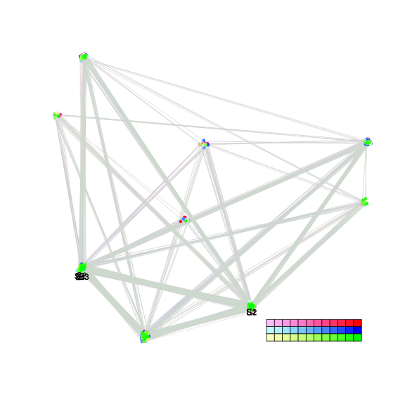
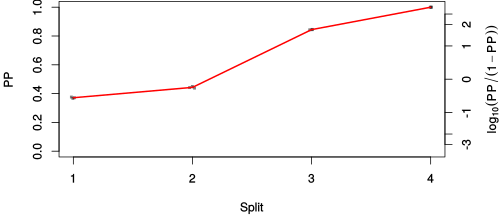
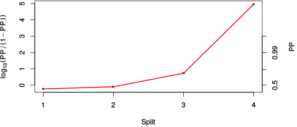

| chain # | burnin | subsample | Iterations (remaining) | command line | subdirectory | directory |
|---|---|---|---|---|---|---|
| 1 | 10000 | 1 | 90000 | bali-phy E6_AA_red3_Lambda.fas -s 58303 -n Lambda_c1 | Lambda_c1-1 | /DATA/work/ONCOGENEVOL/database/trees/Bali-Phy/red3/E6 |
| 2 | 10000 | 1 | 90000 | bali-phy E6_AA_red3_Lambda.fas -s 45793 -n Lambda_c2 | Lambda_c2-1 | /DATA/work/ONCOGENEVOL/database/trees/Bali-Phy/red3/E6 |
| 3 | 10000 | 1 | 90000 | bali-phy E6_AA_red3_Lambda.fas -s 95413 -n Lambda_c3 | Lambda_c3-1 | /DATA/work/ONCOGENEVOL/database/trees/Bali-Phy/red3/E6 |
| P(data|M) = -2386.550 +- 0.120 | Complete sample: 9 topologies | 95% Bayesian credible interval: 7 topologies |
Phylogeny Distribution

| Partition support: Summary |
| Partition support graph: SVG |
{kind=link}
| 50% consensus | Newick (+PP) | SVG | |||||
| 66% consensus | Newick (+PP) | SVG | |||||
| 80% consensus | Newick (+PP) | SVG | |||||
| 90% consensus | Newick (+PP) | SVG | |||||
| 95% consensus | Newick (+PP) | SVG | |||||
| 99% consensus | Newick (+PP) | SVG | |||||
| 100% consensus | Newick (+PP) | SVG | |||||
| MAP | Newick (+PP) | SVG | |||||
| greedy | Newick (+PP) | SVG |
{kind=link}
{kind=link}
{kind=link}
{kind=link}
{kind=link}
{kind=link}
{kind=link}
{kind=link}
Alignment Distribution
Partition 1
| Diff | Min. %identity | # Sites | Constant | Informative | ||||
|---|---|---|---|---|---|---|---|---|
| Initial | FASTA | HTML | Diff | 1.09% | 274 | 1 (0.365%) | 37 (13.5%) | |
| Best (WPD) | FASTA | HTML | AU | 11.6% | 289 | 15 (5.19%) | 38 (13.1%) |
Mixing
{kind=link}
{kind=link}
| burnin (scalar) | ESS (scalar) | ESS (partition) | ASDSF | MSDSF | PSRF-CI80% | PSRF-RCF |
|---|---|---|---|---|---|---|
| 814 | 5427 | 30787.311 | 0.003 | 0.006 | 1.001 | 1.004 |
Projection of RF distances for the first 3 chains3D | Variation of split PPs across chains |
Scalar variables
| Statistic | Median | 95% BCI | ACT | ESS | burnin | PSRF-CI80% | PSRF-RCF |
|---|---|---|---|---|---|---|---|
| prior | -146.8 | (-176.1, -124.4) | 37.33 | 7233 | 657 | 1.001 | 1.001 |
| prior_A1 | -124.4 | (-151.2, -104.6) | 11.82 | 22839 | 354 | 0.9998 | 0.9959 |
| likelihood | -2374 | (-2388, -2362) | 6.656 | 40567 | 192 | 0.9998 | 0.9937 |
| logp | -2522 | (-2549, -2500) | 49.75 | 5427 | 677 | 1.001 | 1.001 |
| Heat.beta | 1 | ||||||
| Scale1 | 3.675 | (1.585, 6.983) | 1.011 | 267055 | 135 | 0.9999 | 0.999 |
| S1.F.pi.A | 0.06003 | (0.04395, 0.07693) | 7.434 | 36320 | 253 | 1 | 1.004 |
| S1.F.pi.R | 0.04981 | (0.03503, 0.0664) | 7.754 | 34821 | 439 | 1 | 0.9956 |
| S1.F.pi.N | 0.03017 | (0.01895, 0.04284) | 8.176 | 33022 | 380 | 0.9999 | 0.9989 |
| S1.F.pi.D | 0.04801 | (0.03342, 0.06461) | 7.986 | 33807 | 348 | 1 | 1 |
| S1.F.pi.C | 0.0727 | (0.05195, 0.09517) | 8.103 | 33320 | 185 | 1 | 0.998 |
| S1.F.pi.Q | 0.03793 | (0.02591, 0.05133) | 7.713 | 35006 | 414 | 0.9998 | 0.9881 |
| S1.F.pi.E | 0.06633 | (0.04894, 0.08516) | 8.269 | 32653 | 259 | 1 | 1.004 |
| S1.F.pi.G | 0.08021 | (0.05846, 0.1032) | 8.175 | 33026 | 323 | 0.9998 | 1.004 |
| S1.F.pi.H | 0.0207 | (0.01129, 0.03154) | 8.228 | 32814 | 814 | 1 | 1.003 |
| S1.F.pi.I | 0.04289 | (0.02989, 0.05724) | 8.175 | 33028 | 216 | 0.9999 | 0.9999 |
| S1.F.pi.L | 0.117 | (0.09237, 0.1427) | 7.761 | 34787 | 362 | 1 | 1.004 |
| S1.F.pi.K | 0.0432 | (0.02976, 0.05778) | 7.858 | 34358 | 427 | 0.9999 | 1.004 |
| S1.F.pi.M | 0.007599 | (0.002698, 0.01406) | 8.521 | 31688 | 426 | 1 | 1.004 |
| S1.F.pi.F | 0.05336 | (0.03707, 0.0715) | 7.89 | 34219 | 476 | 1 | 0.9976 |
| S1.F.pi.P | 0.05119 | (0.03475, 0.06894) | 7.924 | 34072 | 207 | 1 | 1.001 |
| S1.F.pi.S | 0.06067 | (0.04475, 0.07848) | 7.684 | 35138 | 369 | 0.9998 | 0.9987 |
| S1.F.pi.T | 0.05337 | (0.03811, 0.06995) | 7.691 | 35105 | 345 | 1 | 1.004 |
| S1.F.pi.W | 0.01009 | (0.003163, 0.01879) | 8.557 | 31552 | 272 | 0.9998 | 0.9977 |
| S1.F.pi.Y | 0.03288 | (0.02042, 0.04694) | 7.812 | 34562 | 360 | 0.9998 | 1.003 |
| S1.F.pi.V | 0.05361 | (0.03854, 0.07019) | 7.858 | 34361 | 461 | 1 | 1.003 |
| I1.RS07.meanIndelLengthMinus1 | 11.08 | (5.83, 18.5) | 3.136 | 86092 | 92 | 0.9996 | 1.003 |
| I1.RS07.logLambda | -4.387 | (-5.03, -3.832) | 2.051 | 131656 | 187 | 1 | 1 |
| |A1| | 292 | (285, 308) | 5.498 | 49108 | 80 | 0.9412 | 1.002 |
| #indels1 | 14 | (11, 17) | 10.22 | 26428 | 339 | 0.75 | 0.9973 |
| |indels1| | 161 | (150, 199) | 6.56 | 41161 | 77 | 0.9722 | 0.9982 |
| #substs1 | 379 | (367, 386) | 3.895 | 69319 | 68 | 0.9231 | 1 |
| Scale1*|T| | 4.626 | (4.066, 5.22) | 1.899 | 142194 | 173 | 0.9998 | 0.9999 |
| |A| | 292 | (285, 308) | 5.498 | 49108 | 80 | 0.9412 | 1.002 |
| #indels | 14 | (11, 17) | 10.22 | 26428 | 339 | 0.75 | 0.9973 |
| |indels| | 161 | (150, 199) | 6.56 | 41161 | 77 | 0.9722 | 0.9982 |
| #substs | 379 | (367, 386) | 3.895 | 69319 | 68 | 0.9231 | 1 |
| |T| | 1.26 | (0.5192, 2.279) | 1.008 | 267875 | 135 | 0.9999 | 0.9991 |